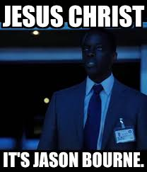
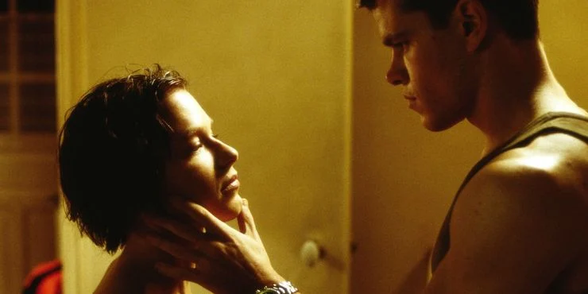

This is a fan page dedicated to The Bourne Trilogy
You will discover hidden easter eggs, bloopers, and much more! Sign up by clicking the button below and get access to tons of other movie fan pages!

Jason Bourne Fun Facts!
He Was Created After Robert Ludlum Experienced Temporary Amnesia
Upon discussing his inspiration for The Bourne Identity in 1984, Robert Ludlum shared a rather bizarre story. As he told it, the author was so joyful about getting his first novel, The Scarlatti Inheritance, published in 1971, that he inexplicably blacked out. When he finally came to, he was unable to remember where he had been or what he had done for the past twelve hours. It was a crucial experience in Ludlum’s life, as the notion of being completely in the dark led him to create the character of Jason Bourne.
He Only Smiles When He Is With Marie

Marie was a beacon of light for Jason Bourne in the first film. Serendipitously meeting while he was on the run, the pair found a kinship that eventually blossomed into romance. As a result, any smiling on the part of Bourne can be directly chalked up to Marie’s charming innocence.
He Is Trained In Kali And Jeet Kune Do
Jason Bourne’s combat ability is legendary. The man can (and has) turned everyday items like pens, magazines, and towels into deadly weapons, much to the chagrin of his opponents. In doing so, the operative confirms the proficiency of two core fighting styles: Kali and Jeet Kune Do. The former, also referred to as “Arnis de Manó (“harness of the hand”), is a Filipino Martial Art that emphasizes simplicity and power.
"Look at this, look at what they make you give."
-Unidentified Profressor, The Bourne Identity
Sign up Now!
When you sign up, you get access to tons of other movie fan pages.